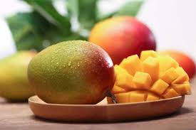

主要产地与香气差异：
共通香气特征：
使用场景：
芒果（Mango）
- 印度、泰国、菲律宾、墨西哥等热带地区出产，香气以热带果香、甜美为主。
- 不同产区的芒果香气差异主要体现在果香的甜度、酸度、热带水果感和微微的辛辣感。
果香浓郁，带有明显的热带水果香气，如菠萝、柑橘、百香果等。整体香气甜美、清新，带有微微的辛辣和热带水果感。
常用于果香调、甜香调、东方调香水，赋予作品甜美、清新、热带气息。适合春夏季节的日常香氛、度假香氛、年轻活力型香水。也常作为前调或中调，与柑橘、菠萝、百香果等热带水果搭配，增强层次感和清新感。